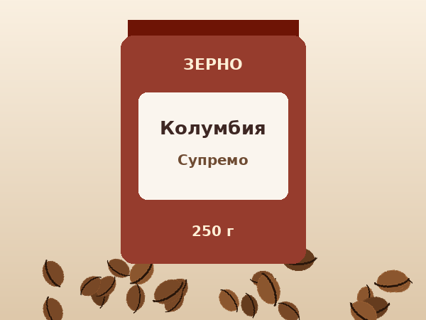

Колумбия Супремо

Описание
Универсальный зерновой кофе для кофемашины, гейзерной кофеварки и воронки. Мягкая кислинка красного яблока, нотки карамели и молочного шоколада.
Характеристики
| Страна | Колумбия, регион Уила |
|---|---|
| Высота произрастания | 1500–1800 м |
| Обработка | Мытая |
| Обжарка | Средняя |
| Вкус | карамель, яблоко, шоколад |
| Сорт | 100% арабика |